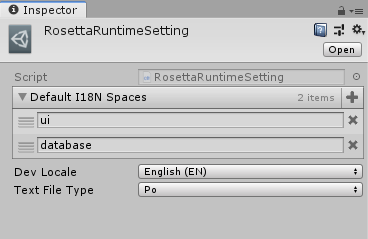

运行时加载和使用
Rosetta 的全局入口是位于 Rosetta.Runtime 命名空间内的名为 Rosetta 的静态类（为便于区分，在下文里约定 Rosetta 指整个框架， Rosetta 该静态类）。Rosetta
提供了初始化函数。不过这里有两条路径可以完成这个任务。
运行时配置
在代码中配置
一个方式是在代码中指定 Rosetta 的各种运行时设置。这时候你需要使用 Rosetta.Init 并传入一个参数列表。
RosettaRuntimeSetting
通过 RosettaRuntimeSetting 启动。
RosettaRuntimeSetting 是一个 ScriptableObject。你可以通过 Project 窗口里的右键菜单来创建。
Rosetta 默认提供一个方法来自动加载它，前提是这个文件位于 Resources
文件夹内，并且保证文件名为 RosettaRuntimeSetting。当然你也可以通过自己的方式读取它，然后在把他的参数读取并传递给 Rosetta.init，就像第一个启动方式一样。

属性
| Name | Description |
|---|---|
| Default I18N Spaces | 默认全局持有域，在 Rosetta 启动后会被直接载入，并全局持有，不会主动释放。 |
| Dev Locale | 默认开发时的语言。 |
| Text File Type | 暂时只支持 Po，之后会支持 mo 格式的载入。 |
初始化
Rosetta 的初始化函数为 Rosetta.Init，无论是否使用 RosettaRuntimeSetting，都需要在初始化时传入一个参数来指定以那个语言来启动。之后 Rosetta 会根据这个值来加载对应语言的默认全局持有域。
因此，我们建议在你的游戏完成其他资源加载，而又未开始游戏进程前，完成 Rosetta 的初始化工作。
获取 I18N 资源
对于被 I18N 组件标记的资源来说，会根据当前所选语言自动完成切换。但是对于其他的来说（比如 ScriptableObject），需要手动获取对应的 I18N 资源并刷新。
Rosetta 提供了一系列方法来获取对应的多语言化后的资源。具体请参考 Rosetta 的 API 文档。
Rosetta 会根据 Rosetta.LoadPath 里的路径依次尝试加载（默认值为游戏顶层文件夹下的 I18N 文件夹）。你可以通过给这个列表添加新的值从而支持从其他地方加载多语言文件（如多语言 Mod）。
运行时域的处理
Rosetta.LoadI18NResSpace(String) 和 Rosetta.UnloadI18NResSpace(String) 分别用来加载和卸载对应的域的 I18N 资源。
监听失败
当资源加载发生错误或者需求的资源不存在时，会触发 I18NFileMissing 事件。而当对应的 Po 文件里不存在要求的 I18NString 时 会触发 I18NStringMissing
事件。你可以订阅这两个事件从而监听加载失败。